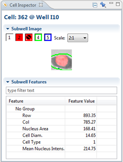

The Cell Inspector shows detailed information about the currently selected cell (in a chart, or on a well image, for example). If applicable, an image of the cell will be displayed at the top.
It is possible to pin or "freeze" this inspector to prevent the shown cell to change when another cell is selected. Use the pin button to do this: 
To open the Cell Inspector view, right-click on a cell and select Inspectors > Cell Inspector.

Just like in other image views, you can adjust the visible layers by turning them on or off by clicking on them.
Features are grouped per group and each group (or "no group" if there aren't any groups) can be expanded by clicking on the triangle before the group name.
The features listed will tell you more about the selected cell. For example, in the image shown above:
- Row: The vertical position of the cell in the well image
- Col: The horizontal position of the cell in the well image
- Nucleus Area: The area of the nucleus in µm²
- Cell Diam. : The cell diameter in µm
- Cell Type: The type of the cell
- Mean Nucleus Intens. :The mean of the Nucleus intensity